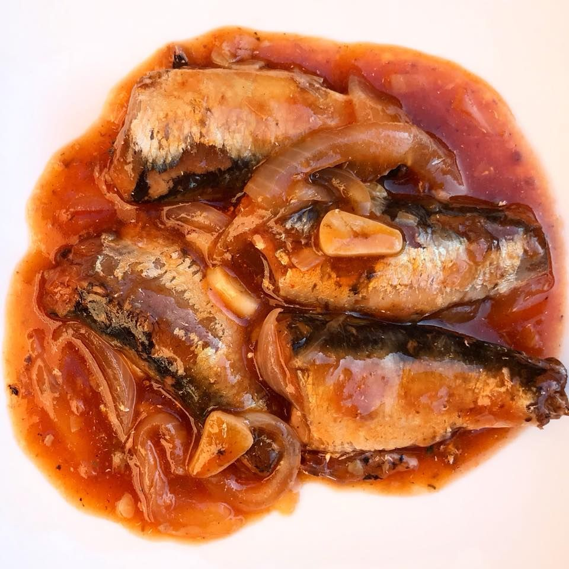
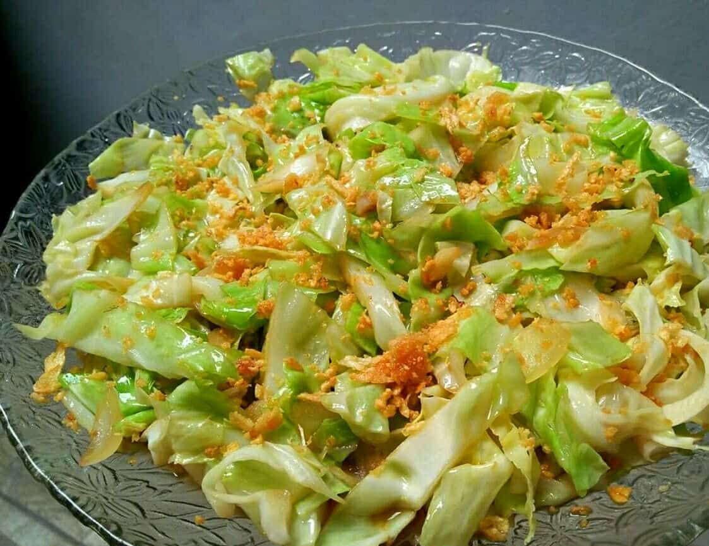

Tortang Talong
Sample estimate: ₱25–₱40 / serving
Simple, affordable recipes for everyday meals.
Good food is always within reach!
Explore Recipes →
Popular Recipes
See all recipes →Sample estimate: ₱25–₱40 / serving

Sample estimate: ₱25–₱40 / serving

Sample estimate: ₱20–₱35 / serving
Sample estimate: ₱70–₱110 / recipe